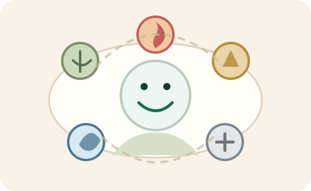
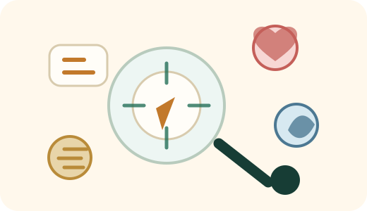
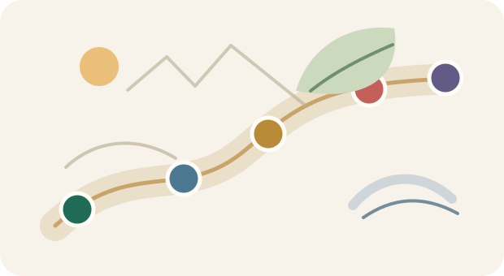

เปิดแผนที่ชีวิตแบบเข้าใจง่าย ไม่ต้องแปลศัพท์เอง
เว็บนี้จะเริ่มจากสรุป 3 บรรทัดที่อ่านแล้วจับแกนตัวเองได้ทันที จากนั้นค่อยพาไปดูตัวตน นิสัย เรื่องที่ค้างใจ และเส้นทางวัยจรแบบไม่ตัดสินชีวิตคุณให้ตายตัว
เว็บนี้จะเริ่มจากสรุป 3 บรรทัดที่อ่านแล้วจับแกนตัวเองได้ทันที จากนั้นค่อยพาไปดูตัวตน นิสัย เรื่องที่ค้างใจ และเส้นทางวัยจรแบบไม่ตัดสินชีวิตคุณให้ตายตัว
เริ่มจากตัวตนหลักก่อน แล้วค่อยดูนิสัย คำถามเฉพาะเรื่อง และช่วงดวง 10 ปี
ถ้ายังไม่แน่ใจเวลาเกิด ระบบจะอ่านจาก 3 เสาหลักก่อน และแยกเสาเวลาเกิดไว้เป็นข้อมูลประมาณการ
คำอ่านควรช่วยให้ตัดสินใจนิ่งขึ้น ไม่ใช่ทำให้กลัวหรือรีบเปลี่ยนชีวิตแบบไม่ฟังตัวเอง
ระบบจะหยิบเทพสิบองค์ที่เด่นที่สุดในดวงของคุณมาเล่าเป็นการ์ดภาพแนว Story พร้อมภาพตัวละคร ชื่อเทพ ตัวตน และวิธีใช้พลังจากเทพองค์นี้ในชีวิตจริง

กราฟนี้ไม่ได้บอกว่าคุณดีหรือแย่ แต่ช่วยแปลว่าคุณมักใช้พลังแบบไหนเวลาทำงาน คุยกับคน และตัดสินใจเรื่องสำคัญ


เว็บนี้ทำขึ้นเพื่อช่วยให้คนทั่วไปอ่านโครงสร้างดวงปาจื่อได้ง่ายขึ้น โดยแปลข้อมูลเรื่องธาตุ เทพสิบองค์ และวัยจร 10 ปีให้เป็นภาษาไทยที่อ่านแล้วนำไปทบทวนชีวิตได้จริง
คำอ่านทั้งหมดเป็นข้อมูลเชิงสะท้อนตัวตนและแนวทางการใช้ชีวิต ไม่ใช่คำแนะนำทางการเงิน การแพทย์ กฎหมาย หรือการตัดสินใจที่มีผลผูกพันในชีวิตจริง
ข้อมูลวันเกิดที่กรอกบนหน้านี้ใช้เพื่อคำนวณและแสดงผลในเบราว์เซอร์ของคุณเป็นหลัก เราไม่ขอข้อมูลอ่อนไหวเกินจำเป็น และควรแจ้งให้ชัดหากอนาคตมีระบบบันทึกข้อมูลหรือบัญชีผู้ใช้
เว็บเตรียมพื้นที่โฆษณาไว้ในจุดที่ไม่บังคำอ่าน ไม่อยู่ติดปุ่มสำคัญ และไม่ออกแบบให้ผู้ใช้กดผิด เมื่อเปิดใช้งานจริงควรระบุผู้ให้บริการโฆษณาและคุกกี้ใน Privacy Policy ให้ครบ